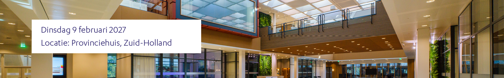
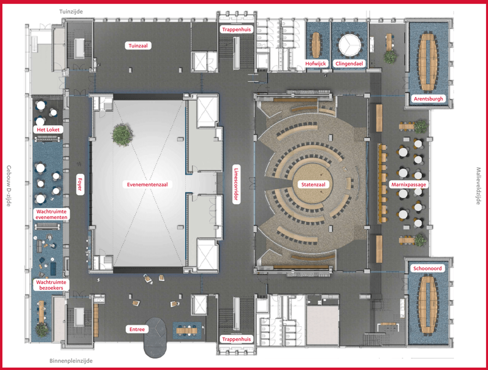
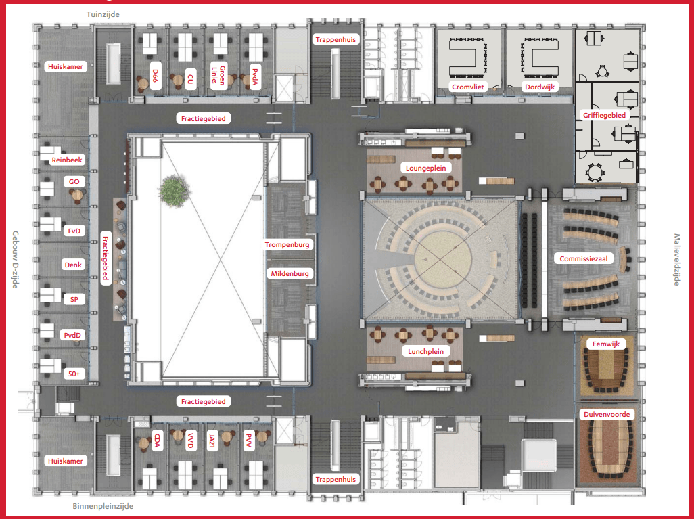

Dinsdagmiddag 9 februari 2027, provinciehuis Zuid-Holland in Den Haag.
Met "Dichtbij in Zuid-Holland" verkennen we de kracht van bereikbaarheid door nabijheid. De nabijheid van wonen, werken, leren en voorzieningen. Maar ook van groen, recreatie en sport. Met korte pitches en interactieve deelsessies ben je weer snel up-to-date met de belangrijkste ontwikkelingen en trends in Zuid-Holland.
| tijd | programma |
|---|---|
| 13:00 | Ontvangst met koffie en thee |
| 13:30 | Aftrap Irma Kenter (domeindirecteur Bereikbaarheid, Wonen, Recreatie, Toerisme en Sport Provincie Zuid-Holland) |
| 13:40 | Keynote: Jonge mensen zijn een grote groep in het OV, door Daan Zieren, directeur Rover |
| 13:50 | Inspirerende korte pitches en een overzicht van de deelsessies |
| 14:30 | Parallelsessies in verschillende rondes verdeeld over tien zalen (zie hieronder) |
| 16:30 | Gedeputeerde Jeroen van Dijken (bereikbaarheid) blikt terug op de samenhang van ruimtelijke inrichting en bereikbaarheid. Gevolgd door een feestelijke netwerkborrel |
De deelsessies volgen. Op deze pagina verschijnen ze zodra ze bekend zijn, later ook met tijden en zalen.
Wil je zelf een sessie geven? Lees de informatie voor sprekers en neem contact met ons op.
Je kunt uit deelsessies kiezen. Keuzestress? Geen zorgen: je kiest op de middag gewoon zelf waar je heen wilt. Je hoeft je niet voor sessies aan te melden. Klik op een sessie voor meer info.
| Tijd | Sessie | Spreker | Zaal (sorteer) |
|---|

